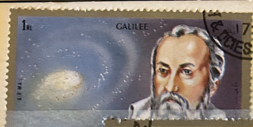
| SOURCE | TITLE| IMAGE MATCH | click to source page |
| iStock | Postage Stamp Shiarjah Dependencies 1972 Shows Galileo Galilei Stock Photo - Download Image Now - iStock | 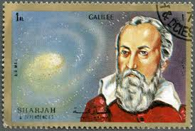 |
| YouTube | Personagens ilustres na história da ciência - YouTube | 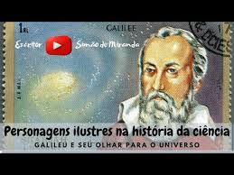 |
| Cracked.com | The 6 Greatest Acts of Trolling in the History of Science | Cracked.com | 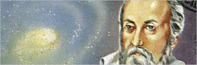 |
| eBay | Bissau-Guinean Science & Technology Postal Stamps for sale | eBay | 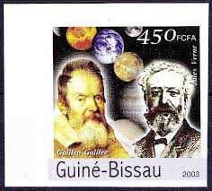 |
| eBay | Block 2012 Used Galileo Galilei Astronomer Physicist Engineer | eBay | 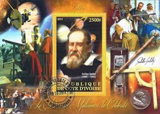 |
| Did you know Galileo Galilei discovered the four moons of Jupiter? Let's get to know more about him this " Wise Wednesday"! #CollinsWiseWednesday | 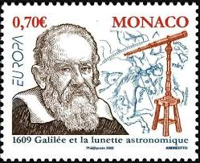 | |
| University of St Andrews | Evangelista Torricelli | 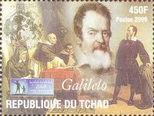 |
| Medium | Galileo has been called the “father of observational astronomy”, the “father of modern physics”, and the “father of science”. | by Ashwani Kumar | Medium | 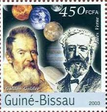 |
| Olivet Nazarene University | Galilei Galileo | 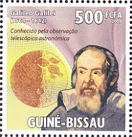 |
| Meditative Philately | Galileo Galilei Telescope Souvenir Sheet Mint NH – Meditative Philately | 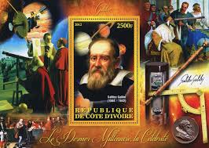 |
| cypruspost.post | Intellectual Pioneers | 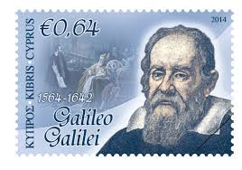 |
| Wikimedia.org | Galileo Galilei - Wikimedia Commons | 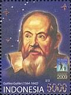 |
| Wikimedia.org | File:The Soviet Union 1964 CPA 3029 stamp (World Cultural Figures. Galileo Galilei (1564-1642), Italian astronomer, physicist and engineer).jpg - Wikimedia Commons | 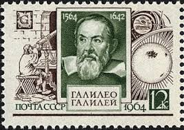 |
| Shutterstock | Italia Circa 1983 Postage Stamp Printed Stock Photo 174497399 | Shutterstock | 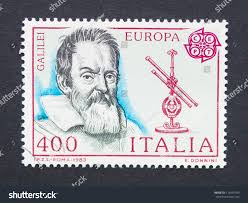 |
| UQAM | Galileo Galilei Portraits | 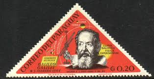 |
| Avion Thematics | Avion Thematics Stamps | Search for stamps on m+sheet | 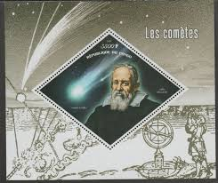 |
| PICRYL | The Soviet Union 1964 CPA 3029 stamp (World Cultural Figures. Galileo Galilei (1564-1642), Italian astronomer, physicist and engineer) - PICRYL - Public Domain Media Search Engine Public Domain Search | 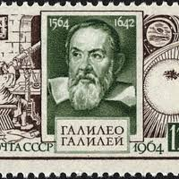 |
| 2eurocommemorativecoins.com | 2 Euro Commemorative Coins: 2 euro Italy 2014, 450th Anniversary of the birth of Galileo Galilei | 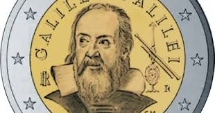 |
| Stamp Community Forum | Optical Instruments: Microscopes, Binoculars, Sextans, Theodolits, Hand Scopes - Page 5 - Stamp Community Forum | 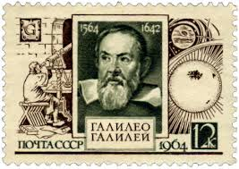 |
| Wikimedia.org | File:Stamp of Moldova - 2009 - Colnect 216648 - Astronomer Galileo Galilei 1564-1642.jpeg - Wikimedia Commons | 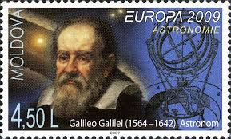 |
| eBay UK | Mozambican Historical Figures Famous People Postal Stamps for sale | eBay UK | 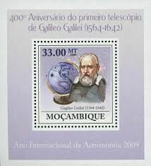 |
| eBay | Galileo Galilei Anniversary Astronomy Mini Sov. Sheet MNH | eBay | 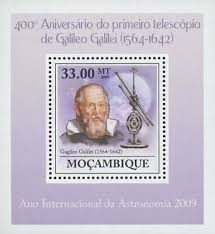 |
| YouTube | GALILEO GALILEI - YouTube | 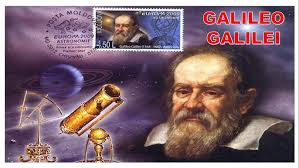 |
| CollectorBazar | Guinea Bissau 2009 MNH Imperf, Galileo, Father of modern physics, Astronomy, Science | 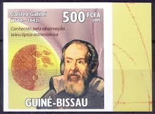 |
| Find Your Stamps Value | Galileo Galilei 2fo red brown stamp price, value | 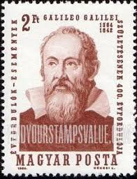 |
| 13 Scientists on Stamps ideas | postage stamps, stamp, philately | 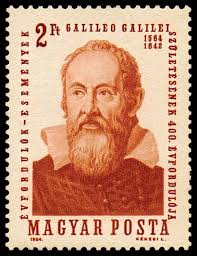 | |
| Todocolección | congo 2015 sheet mnh barcos ships boats bateaux - Buy Antique stamps of Congo on todocoleccion | 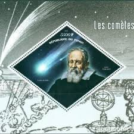 |
| Wikimedia.org | File:The Soviet Union 1964 CPA 3029 stamp (World Cultural Figures. Galileo Galilei (1564-1642), Italian astronomer, physicist and engineer) large resolution cancelled.jpg - Wikimedia Commons | 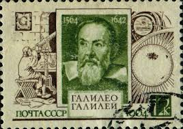 |
| eBay | Galileo Galilei Stamp Famous Physicist Mini Sov. Sheet MNH | eBay | 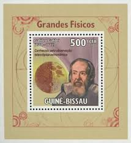 |
| Wellcome Collection | Galileo Galilei. Wood engraving by L. Dumont after H. Rousseau. | Wellcome Collection | 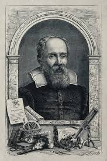 |
| drkenp.com | Astronomy - History - Philately - Curiosity : Big Bang Theory: The Longest Playing Reality Show in History. | 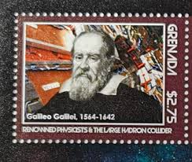 |
| eBay | Guinea Bissau 2009 MNH, Galileo, Father of modern physics, Astronomy Science [RG | eBay | 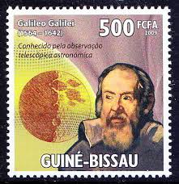 |
| Sutori | Sutori | 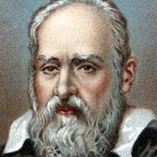 |
| Zazzle | Galileo Figaro BW Postcard | Zazzle | 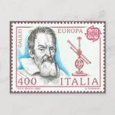 |
| INFN - Istituto Nazionale di Fisica Nucleare | Meeting inaugurale del Centro di Studi Avanzati GGI | 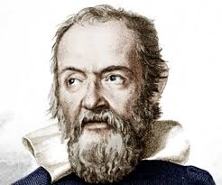 |
| Wikimedia.org | File:Stamp of Albania - 1987 - Colnect 366150 - Galileo Galilei 1564-1642 Italian mathematician and philo.jpeg - Wikimedia Commons | 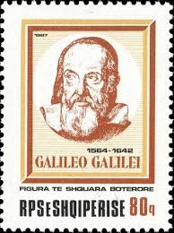 |
| Shutterstock | Madrid Spain January 1 2026 Vintage Stock Photo 2732627411 | Shutterstock | 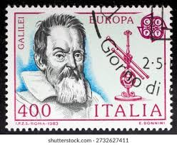 |
| Science Photo Library | Galileo Galilei, Italian physicist and astronomer - Stock Image - H407/0239 - Science Photo Library | 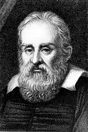 |
| Alamy | Portrait of Galileo Galilei on postage stamp Stock Photo - Alamy | 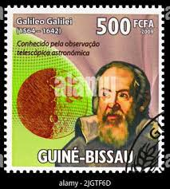 |
| Blogger.com | Swami's Indology Blog: Galileo's Telescope and Invention of Suspension Bridge! (Post No.6426) | 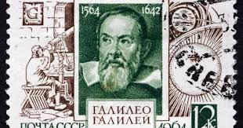 |
| X | Galileo Galile (@GalileoGalile_) / Posts / X | 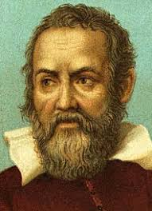 |
| iStock | Ussr 1964 Shows Galileo Galilei 400th Birth Anniversary Stock Photo - Download Image Now - iStock | 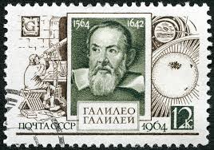 |
| YouTube | Galileo's Revolutionary Telescope A Glimpse into 1609 - YouTube | 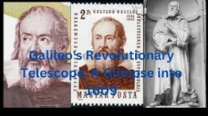 |
| PNI Atlantic News | ATLANTIC SKIES: How bright do the stars shine? The magnitude system explained | PNI Atlantic News | 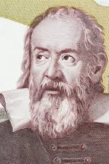 |
| University of St Andrews | Galileo album page | 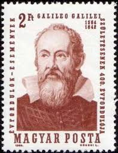 |
| Shutterstock | Galileo Galilei Portrait On Italy 2000 Stock Photo 746396107 | Shutterstock | 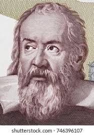 |
| eBay | Srpska - Galileo Galilei | eBay | 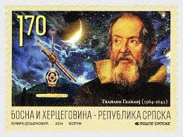 |
| Weebly | Founding fathers - MY SITE | 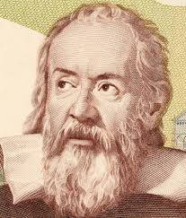 |
| Numista | Current sale offers – Numista | 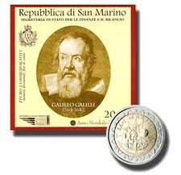 |
| cypruspost.post | Πρωτοπόροι Πνευματικοί Άνθρωποι | |
| Fine Art America | Galileo Telescope Photos for Sale - Fine Art America | |
| YouTube | Galileo and the theory of value - YouTube | |
| iStock | 30+ Mail Postage Stamp Romanian Culture Romania Stock Photos, Pictures & Royalty-Free Images - iStock | |
| Shutterstock | 8+ Thousand Science. Italian Royalty-Free Images, Stock Photos & Pictures | Shutterstock | |
| The Library of Congress (.gov) | Gravity from the ground up | |
| Today we commemorate Galileo Galilei's birthday! Born on 15th February 1564 in Italy, Galileo, who is one of the pioneers of the scientific method is known for his major contributions in motion | ||
| Christiaan van der Klaauw | Christiaan van der Klaauw | Astronomy | |
| Pngtree | Galileo Background Images, HD Pictures and Wallpaper For Free Download | Pngtree | |
| Shutterstock | Galilei: Over 1,152 Royalty-Free Licensable Stock Photos | Shutterstock | |
| iStock | Galileo Galilei Stock Photo - Download Image Now - Galileo Galilei, Postage Stamp, Air Mail - iStock |
,_Italian_astronomer,_physicist_and_engineer).jpg){kind=link}
{kind=link}
,_Italian_astronomer,_physicist_and_engineer)_large_resolution_cancelled.jpg){kind=link}
{kind=link}